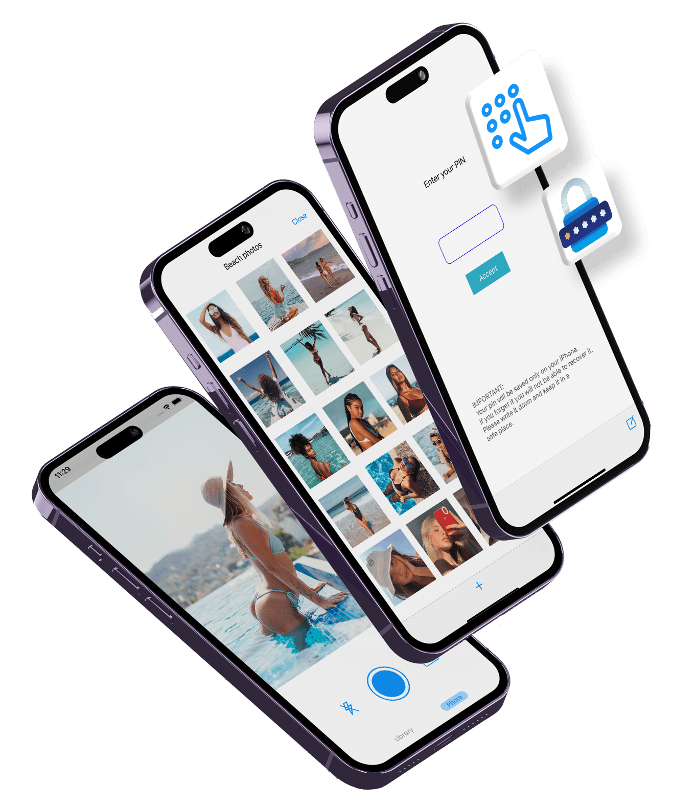

Photo Vault
Hide private photos and videos on your iPhone behind Face ID. No account, no cloud, nothing uploaded.
Download on the App StoreWhat it does
- Face ID, Touch ID or passcodeThe vault locks every time you leave the app.
- A password per albumLock a single album with its own password, on top of the app lock.
- Disguised app iconSwap the home-screen icon for Calculator, Notes or Weather.
- Face-down lockTurn the phone face down and the app jumps to Safari, Messages or Calendar.
- Import or shoot inside the vaultBring photos and videos in from your library, or take them with the built-in camera so they never touch the camera roll.
- Encrypted backup you keepExport the whole vault, albums and album passwords included, to one file locked with a password you choose. Keep it in Files, on your computer or in your own iCloud Drive, and restore it on a new iPhone. Without the password nobody can open it, us included.
- Nothing leaves the phone unless you chooseNo sign-up, no server, no cloud sync. The vault is excluded from iCloud backups, the passcode is kept in the iOS Keychain, and files use iOS Data Protection: unreadable while the iPhone is locked.
Who it is for
People who want private photos out of the main Photos library, and out of anything that syncs, without creating an account with yet another company. If you want your vault to sync to a cloud automatically, Photo Vault is not the right app: it deliberately has no cloud. You make backups yourself, when you choose, and keep them where you choose.
Questions
Do I need an account?
No. There is no sign-up, no email and no server. Photo Vault works entirely on the iPhone.
Are my photos uploaded anywhere?
No. There is no cloud sync. The vault is also excluded from iCloud and iTunes backups, so your private photos do not end up in a backup either.
What happens if I lose my phone or delete the app?
Export a backup first. Settings → Backup puts every photo, video and album into one file locked with a password you choose; keep it in Files, on your computer or in your own iCloud Drive, and restore it on the new iPhone. There is no automatic backup, so without one the photos are gone with the phone.
How do I move my vault to a new iPhone?
Export a backup on the old iPhone (Settings → Backup), send the file to the new one with AirDrop or Files, and restore it there with the same password. The vault is not part of iCloud backups, so it does not move on its own.
Can I hide the app itself?
Yes. You can switch the home-screen icon to Calculator, Notes or Weather.
How is this different from the Hidden album in the Photos app?
The Hidden album is free and built in, and for many people it is enough. Photo Vault adds a separate password per album, a disguised icon, a face-down lock, and keeps the photos out of your main library and its backups.
How much does it cost?
It is free to download and try. A subscription, with a free trial, unlocks unlimited photos and videos. Anything already saved stays accessible even if the subscription ends.
Photo Vault is made by Saga Labs, an independent app studio. Formerly called Keeper.